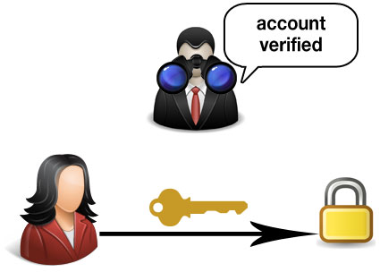
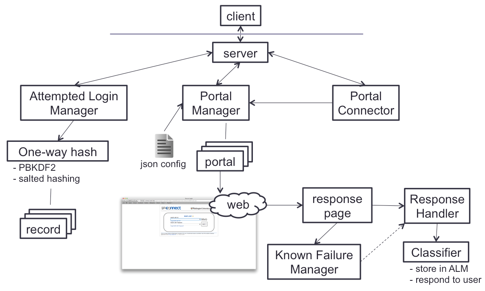
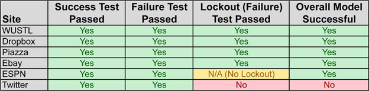

Auto-Auth-Server
Auto-Auth-Server is an external authentication server & RESTful API capable of authenticating through web portals for arbitrary websites. It uses machine learning techniques to determine website login success or failure, and it is currently hosted on Amazon's Elastic Beanstalk cloud platform.
Auto-Auth-Server is a Master's project by Jay Waldron advised by Professor Ron Cytron at Washington University in St. Louis defended Spring 2014.
Why?
There are many cases where we may want to validate the identity of a user or their account membership for a given website. Tying accounts to domain-specific email addresses is the most common way of handling this but carries its own set of issues, such as the need to manage several additional accounts for users who are otherwise the same individuals. Additionally, while some websites open their authentication portals for public use, the large majority of them do not. One of the primary goals of this project is to create API-like authentication access to sites that do not open their portals by automating browser-side login.
Additionally, while a lot of research has been compiled on classifying types of webpages (blog, news, media, etc.), not much has been studied when it comes to examining classifying positive / negative pages in areas such as login responses. Exploring automated authentication in uncertain conditions and for arbitrary websites (at which the administrator does not even require membership to utilize) was another goal for this project.
The API
Auto-Auth-Server provides a very simple API for general use. You can interact with this demo server using the methods below.
Get currently active portals: /api/portals
description:
Returns a list of the admin-defined portal codes representing the currently active portals Auto-Auth-Server is running. This list is formatted as a JSON array wrapped in a JSON object under the "portals" key. The array value may be null if no portals are currently active. A portal will not be active (will be omitted from the list) if the server is currently starting up or if a portal is first initializing.
method & endpoint:
GET https://www.auto-auth-server.com/api/portals
return value:
JSON dictionary with:
| portals | - | JSON array of the currently active portal codes |
Authenticate at a portal: /api/login
description:
Attempts authentication at the requested portal, which must be listed as active, using the credentials provided. After an attempt is made at the portal with a username/password combination, its success is cached for 5 minutes since its last request. Returns a JSON object determining the result of requested authentication.
method & endpoint:
POST https://www.auto-auth-server.com/api/login
The following parameters are required:
| portal_code | - | the portal where authentication should occur |
| username | - | the username used to authenticate |
| password | - | the password used to authenticate |
return value:
JSON dictionary with:
| username | - | username used to authenticate |
| portal_code | - | portal where authentication was attempted |
| success | - | true / false indicating if authentication was successful |
| reason | - | the reason behind the success value |
Administer Your Own
Please feel free to administer your own Auto-Auth-Server or branch and improve the code as you see fit. More technical information on server setup and administration can be found in the project README.
https://github.com/foxfire206/Auto-Auth-Server
How Does This Work?
Every day there are countless scenarios, both in real life and across the web, where we are required to authenticate and prove our identity. In most all of these cases, authentication occurs by example: you provide an example of your identity by allowing a third-party agent to observe you authenticating. Sometimes this observation is innate in the authentication mechanism, such as an ATM program checking the PIN number you've input before allowing you access to funds. Other times it's more straightforward: a police officer watching you unlock a home's front door may assume within reason that you ought to have access to it. Using similar logic, Auto-Auth-Server watches your credentials return a page after a login attempt and decides whether or not you have authenticated correctly.

authentication by example
Structure
Auto-Auth-Server is meant to be easily configurable by administrators to fit their authentication needs. Upon launching the server, a configuration file with the admin-specified portals is loaded. Login is then attempted at each of the defined sites with purposefully bad credentials in order to obtain a baseline failure. Once setup is finished for a portal, it becomes present in the active portals list and available for use.
When a client-side request comes in, the server first checks the requested portal and provided credentials against previous records in the Attempted Login Manager. If a previous record of attempted login exists, the saved login success / failure indication for that record is returned to the user and its access time updated. This information is deleted from the server 5 minutes from its last client access.

general server structure
If no record exists, the server attempts login at the requested portal using the provided credentials. The page loaded after a login attempt is then analyzed by a Random Forest generated model, trained with data from several sites I collected manually. Finally, the result (success / failure) of the login attempt is cached in the Attempted Login Manager for later use and returned to the user.
The use of the default general Random Forest model allows for some pretty neat things to happen. Primarily, it allows an admin to open authentication at a portal where she might not have an account or even know herself what successful authentication looks like! Unfortunately, this model is general, and thus more prone to mistakes than one specialized for one site where the admin knows almost every kind of possible login response. To allow additional flexibility, the admin may define a portal as using a specialized model with some additional setup. For this demo, login at WUSTL uses the general model while Twitter authentication makes use of the specialized model.
Performance
While training the model, accuracy of detecting success / failure login response pages was consistently above 97%. More information on this initial testing and techniques used can be found in the attached slide deck. Live production tests on sites never initially seen by the model are shown below:

production testing results
Login at each site was tested using valid credentials, invalid credentials, and valid credentials after an account was locked. All tests passed successfully except for Twitter's lockout test, which generated a false positive. Using a specialized model for Twitter solved this problem and allowed each test to be passed successfully.
This description is meant to serve as a broad overview on what's going on behind the scenes. More in-depth information can be found in my defense presentation slides or in the FAQs below.
FAQs
Do you store my password?
Auto-Auth-Server wants to be as friendly as possible to portal sites with which it interacts. To limit the number of successive login attempts on external sites, the server caches username and password information in memory for 5 minutes since last use. Cached passwords are encrypted with one-way salted hashing, are never saved in persistent storage or human-viewed, and are purged from the server after the 5 minute caching limit.
Why should I trust you with my credentials?
Trust is an interesting problem on the web. Lots of organizations, people, and bots collaborate to accomplish goals, sometimes ones that deal with sensitive information, and there are often multiple opportunities for information to be compromised within a web of trust. Ultimately, what ensures that any other third-party service (e.g. a third-party Twitter or Facebook app) won't steal your login info? While you don't have to, I do hope you will trust this service, and I have open-sourced the code for this project to help show that nothing nefarious is going on. Check out the section above labeled Administer Your Own to check out the code.
I logged in with the correct info, but Auto-Auth-Server says its wrong!
Because each site on the web is radically different, Auto-Auth-Server uses machine learning techniques to classify a login page's response using a model of what typical positive / negative login attempts look like. While it usually has a pretty high success rate, the model can certainly get things wrong, especially if a page generated after an otherwise successful login looks very different from what its seen before. To help combat this, Auto-Auth-Server is capable of using a highly specialized model for individual portals. However, this must be configured by the administrator. For this demo, authentication at Twitter uses such a model.
The API seems slow...
There are currently a handful of reasons things could be a bit slow. One reason is that Auto-Auth-Server authenticates at arbitrary web portals, so its speed depends in part on the speed of the portal with which it's interacting. However, a more likely explanation is that this demo is running on a free-tier AWS EC2 instance, complete with the blazing speed that accompanies a 1-core vCPU and around 512 MB memory.
I could abuse this.
Please don't. I would like to allow a live demo of this project to remain online for as long as possible, and there are a few safeguards in place to help prevent abuse for this demo. While I hope you'll only use this project for good, not evil, I would greatly appreciate you respecting this demo space and instead downloading the code yourself for any more questionable purposes. This project is meant to offer a benevolent service and explore the world of uncertain authentication, and I certainly don't condone the use of this project for nefarious purposes or assume responsibility for the actions of those using this code for purposes other than the one intended.
Thank You
A big thank you to Professor Ron Cytron for inspiring, overseeing, and assisting so much with this project. Also thanks to Washington University in St. Louis professors Ron Cytron, Sanmay Das, and Kilian Weinberger for participating in the project critique on my defense comittee.
This project relies heavily on several other open source third-party libraries and services. Thanks to the following libraries for their contribution to open-source development and for making their infrastructure available: